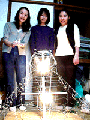
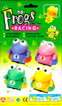
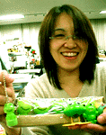

かえるサボテン３。モロー君フィギュア３、ストラップ８を発売！【けろテン市場】深夜にカエル新聞を見に来た人には朗報が追加されているぞおお。それは、けろテン市場で、『かえるサボテン』第二期分譲、『モロー君』第五期分譲がなんと同時に行うのである！申し込みは先着順なので、イマスグにでかけてみましょーっかえる大明神、紙３０枚、出展品増産に励む『かえる展事務局』！ 【福岡かえる展２事務局発表】かえる展開催まで１カ月になった５月５日の子供の日、かえる展事務局は、モロー寺井師、コロスケ氏、走るカエルりょーこさん、大王、ぴのこ事務局長、熊本のんたん同志が参加して、福岡市早良区の秘密かえる工房で展示物の生産に励んだ。中でも、かえる展会場に展示する『ねぶた式かえる大明神１型』は、４日朝からモロー寺井師とコロスケ氏が昼夜兼行で制作を進めているもので、全高７０センチ、幅９０センチ、木材で背骨を組み立て、針金で内部に電球を格納したカエル座像だ。 また、環境保護の立場を貫くために、廃物のチラシなどを原料にして再生紙の増産に励み、午後１時過ぎから午後１０時半までの間に、３０枚もの再生紙を生産した。前回の生産では４人がかりで４時間かけて６枚の生産力だったので、８時間で３０枚を生産したのは大勝利であるー。 しかし目標の３００枚には到達せず、当日までに再生紙の画用紙を揃えることができるのであろうか。 ５月５日の様子は、公式ホームページで読もう！ カエルゲーム『けろりんピック』玩具で発売！ 【兵庫県芦屋発=けろけろ同志記者】先日和歌山に行ったとき偶然にも「Ｆｒｏｇｓ ＲＡＣＩＮＧ」というおもちゃを発見しました。そのおもちゃは、かえる新聞平成９年9月4日にも登場したゲーセンのゲーム「けろりんピック」なのです。市販タイプとして登場した今回は、その名を「Ｆｒｏｇｓ ＲＡＣＩＮＧ」に変えていたのです。 かえるくんは「緑」「青」「黄」「ピンク」の４種類あって、よーいどんで競争させることができます。単３乾電池１個で動いて、口をぱくぱくさせてはびょんびょんとジャンプしながら前に進むのだ。購入した場所は「ＢＩＧ ＷＡＶＥ和歌山マリーナシティ店」で７００円でした。みんなも和歌山県に行ったらかえる橋によって帰りには「Ｆｒｏｇｓ ＲＡＣＩＮＧ」をお土産に買って帰ろう。。
【全国かえる奉賛会】おおーゲーセンでも人気者だったが、カエルブーム直前の登場で一般受けはいまいちであったが、今回は家庭用ゲームとして再登場したんですねー。なんにせよ、のどかなゲームなので温厚な子どもを育てたい方にはぴったしのゲームです。
韓国でカエルが凶暴化！【韓国発=kei-f同志記者】五月一日今日の午後八時から日本テレビで放送予定の『世界まる見え！テレビ特捜部』で、韓国のカエルの生態が紹介されるそうです。バケモノガエル異常大発生したそうです。【全国かえる奉賛会】食用ガエルが大量に繁殖して、池の魚類７種類のうち４種類が絶滅したらしい。さらにネズミは食う。鳥も食べる。池にやってくるスズメも食うし。なんとヘビも食べてしまうらしい。マムシがかみついても、皮膚が装甲化しているカエルには歯が立たず、逆に丸飲みされてしまうそうなのだ。これはすごい！ 皮膚が無防備なカエルは、脆弱の代表のようなイメージだったが、そのうちに人類を凌ぐ凶暴さを体得して、今の人類に代わって地球を支配してほしいぞ。われわれカエラーは、カエルに丸飲みされて死するは、本望というものであろう。頑張れ韓国バケモノガエル！
 孤独カエラーよ職場で決起せよ！【福岡発=伸枝同志記者】私の職場には、カエラーは私だけ。カエルグッズが机の上に増えてしまったので、『カエルだらけじゃないかあ』と、周囲から、おしかりを受けてシューンとなっていたところ、大王様一行の職場視察の折りに、『常に逆境から立ち上がるのが先駆者の使命である。屈せず職場のカエル化を継続しよう』と激励を受け、勇気百倍しているところです。
【全国かえる奉賛会】おおおー。カエラーが孤軍奮闘している職場を訪ねては、激励して回る『水戸黄門式カエル教化作戦』を遂行している大王である。孤独なカエラーがいたら、出動できる範囲内ででかけてゆくからねーっ。
損保２社が競ってカエルキャラ！【東京発=GEN&SHION同志記者】損害保険会社は、１９９８年７月まで護送船団方式の中、自動車保険について全社統一の商品を扱っておりましたが、日米保険協議でのアメリカからの外圧、そして当時の橋本首相が推進を決定した「金融ビックバン」のあおりをくって、現在、商品の多様化が急速に進んでいます。と、ちょっとかたい話から入ってみたのは、東京海上と日本火災の面白い共通点を見つけたからです。自動車保険はほとんどが１年契約の掛け捨て保険なわけですが、うえで述べたような事情から、東京海上と日本火災は積み立て部分のある自動車保険を発売しています。 この積立自動車保険、東京海上は「積立TAP」、日本火災は「GET BACK」という商品名なのですが、今までは払いっぱなしだった保険料が「かえる」という新機軸商品となっています。この２つの保険のパンフレットを見たところ、何と、２つともが「カエル」をキャラクターとして採用していました。「かえる」から「カエル」・・・安直と言うなかれ。本格的な自由化を迎えて必死に知恵を絞る保険会社の苦労が目に浮かぶようで涙を誘います。 パンフレットはちょっと送れないのですが、積立TAPの紹介は、このページで。またGET BACKの紹介は、で行われています。どちらにもカエルキャラクターがいます。
訪問９９９９９人目に記念品贈呈！【全国かえる奉賛会】９９９９９人目の訪問者に、記念品を贈呈するぞー。該当者は、大王様へのメールwakuro-3@hf.rim.or.jpで自己申告してくれー。福岡かえる展２のＭＬを開設！【福岡かえる展２事務局】福岡かえる展２の実行委員会用のメーリングリストを開設しました。公式ホームページの他に、実行委員会メンバーが情報交換する場所です。もちろん最新の情報は、昨年同様に、できるかぎりすべて、公式ホームページで公開します。メーリングリストで、その準備段階から体験したいというカエラーは、参加していただいてかまいません！参加申し込みは、ここからも自分でできるからねーっ！ 投稿採用者に武功カエル徽章を授与！ |
かえる古新聞過去に取り上げた記事を見出し付きで一覧したい人は、ここをクリック◆創刊号を見る◆先週号を見る◆話題の号を見る◆かえる新聞の昔を読む
|
私も入っています。。全国かえる奉賛会
大王様に会うには、このバナーをクリック。ずっと奥に写真館があるぞ。全国かえる奉賛会に入会するには、自分のホームページのどこかに、下の部分を追加するとバナーがリンク付きで表示されるぞ。どんどん入会しましょー |


|